梯度下降是一种在机器学习中被广泛使用的优化算法，它是许多算法的基础，例如线性回归、逻辑回归以及神经网络的早期实现。00:03
但事实证明，现在有一些其他的优化算法，在最小化代价函数方面，甚至比梯度下降更好。00:19
在本视频中，我们将探讨一种算法，它能帮助你比梯度下降更快地训练你的神经网络。00:28
回想一下，这是一步梯度下降的表达式。00:36
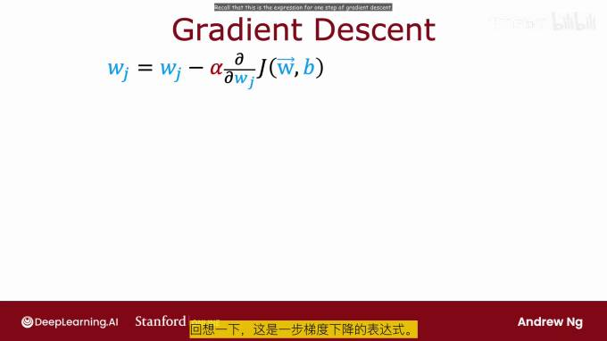
参数 W 下标 j 被更新为 w 下标 j 减去学习率 alpha 乘以这个偏导数项。00:41
我们怎样才能让这做得更好呢？00:49
在这个例子中，我使用一个由这些椭圆构成的等高线图来绘制代价函数 J。00:52
因此，这个代价函数的最小值位于下面这些椭圆的中心。01:01
现在，如果你在此处开始梯度下降，如果 alpha 很小，一步梯度下降可能会带你向那个方向走一点点，然后是另一步，再一步，又一步，接着一步。01:07
你会注意到，梯度下降的每一步几乎都朝着完全相同的方向前进。01:22
如果你发现是这种情况，你可能会想，那么，我们为什么不把 alpha 调大一些呢？01:28
我们能否有一种算法，能自动增大 alpha，让它迈出更大的步伐，从而更快地到达最小值呢？01:34
有一种叫做 ADAM 算法的算法可以做到这一点。01:43
如果它发现学习率太小，而我们只是一遍又一遍地以微小的步伐朝相似的方向前进，我们就应该把学习率 alpha 调大。01:49
相比之下，这里又是同一个代价函数。02:01
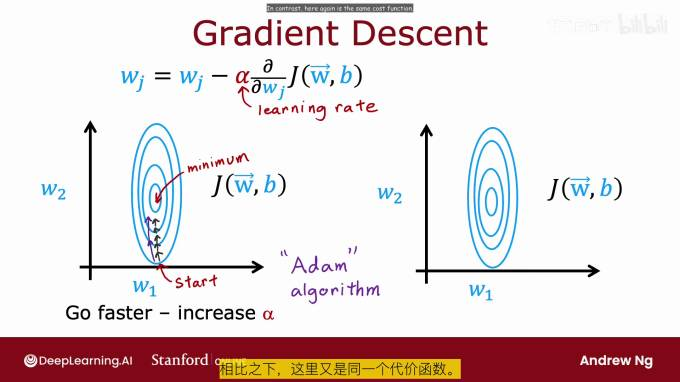
如果我们从这里开始，并有一个相对较大的学习率 alpha，那么可能第一步梯度下降把我们带到这里，第二步带到这里，第三步，第四步，第五步，第六步。02:05
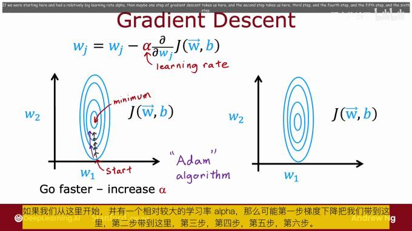
如果你看到梯度下降像这样来回震荡，你可能会倾向于说，那么，我们为什么不把学习率调小呢？02:21
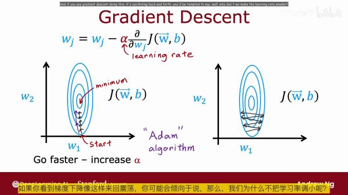
而 ADAM 算法也能自动做到这点。 N。02:29
有了更小的学习率，你就可以沿着一条更平滑的路径走向代价函数的最小值。02:33
所以，根据梯度下降的进行情况，有时你希望有一个更大的学习率 alpha，有时你希望有一个更小的学习率 alpha。02:41
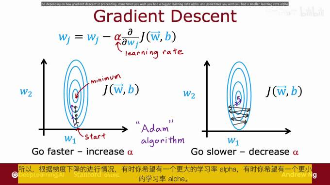
因此，ADAM 算法可以自动调整学习率。02:51
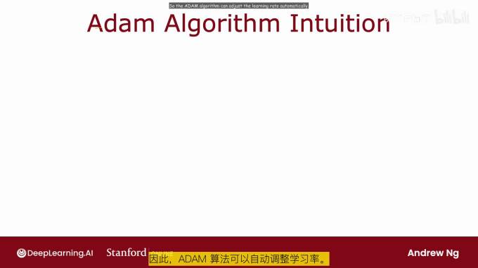
ADAM 代表自适应矩估计，简称 ADAM。02:56
不用太担心这个名字的含义。03:02
这只是作者们给这个算法起的名字。03:04
但有趣的是，ADAM 算法并不使用单一的全局学习率 alpha。03:08
它为你模型的每一个参数都使用不同的学习率。03:14
所以，如果你有参数 w 一到 w 十以及 b，那么它实际上有十一个学习率参数，对应 w 一到 w 十的 alpha 一、alpha 二，一直到 alpha 十，以及，我称之对应参数 b 的 alpha 十一。03:19
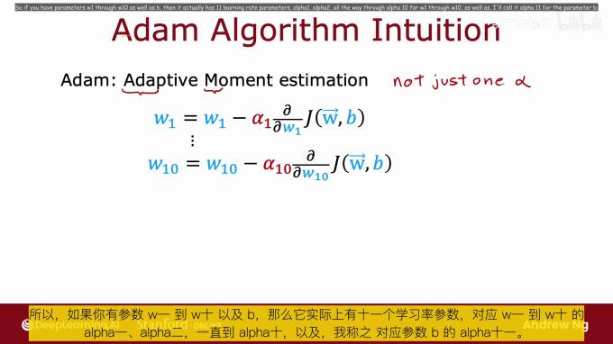
ADAM 算法背后的直觉是，如果一个参数，w 下标 j 或 b，似乎一直在朝大致相同的方向移动，这就是我们在上一张幻灯片上第一个例子中看到的。03:37
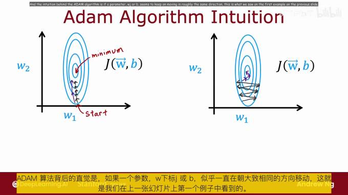
但如果它似乎一直在朝大致相同的方向移动，我们就增加该参数的学习率。03:51
让我们朝着那个方向走得更快些。03:58
相反地，如果一个参数不停地来回震荡，这是你在上一张幻灯片上第二个例子中看到的，那就不要让它继续震荡或来回反弹。n。04:01
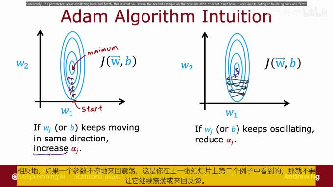
我们就把那个参数的学习率调小一点。04:13
ADAM 如何做到这点的细节有些复杂，超出了本课程的范围。04:18
但如果你日后参加一些更高级的深度学习课程，你可能会学习到更多关于这个 ADAM 算法细节的内容。04:24
但在代码中，你这样实现它。04:35
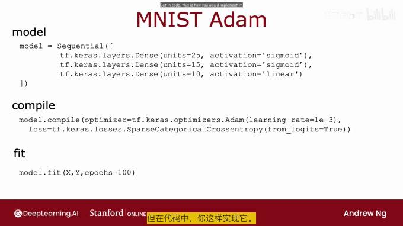
你编译模型的方式也与之前非常相似，区别仅在于我们现在向编译函数添加了一个额外的参数，即我们指定要使用的优化器是 tf.keras. 中的优化器。04:42
所以 ADAM 优化算法确实需要一个默认的初始学习率 alpha。05:01
在这个例子中，我将初始学习率设置为十的负三次方。05:07
但你在实践中使用 ADAM 算法时，值得为这个初始的、默认的全局学习率尝试几个值。05:14
尝试一些更大和更小的值，看看哪个能带给你最快的学习性能。05:22
然而，比起你在先前课程中学到的原始梯度下降算法，由于 ADAM 算法能够自动适应学习率，它对你所选择的学习率的确切值更为鲁棒。05:28
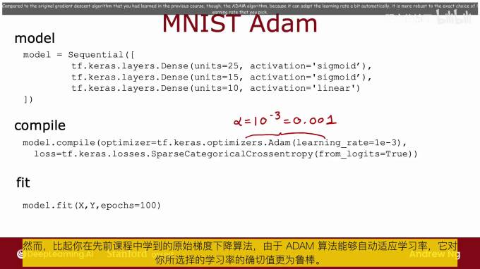
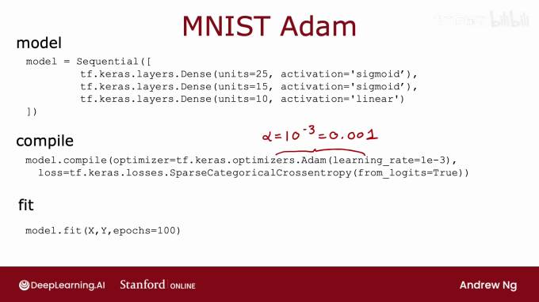
尽管如此，对这个参数稍作调整，看看能否获得更快的训练速度，仍然是值得的。05:45
ADAM 优化算法的内容就是这些。05:52
它通常比梯度下降快得多，并且已经成为从业者训练神经网络的事实标准。05:55
所以，如果你在决定使用什么学习算法，用什么优化算法来训练你的神经网络，一个稳妥的选择就是直接使用 ADAM 优化算法。06:05
如今，大多数从业者会使用 ADAM，而不是原始的梯度下降算法。06:16
有了这个，我希望你的学习算法能够学习得快得多。06:23
现在，在接下来的几个视频中，我想谈谈神经网络的一些更高级的概念。06:30
特别是，在下一个视频中，让我们来看一些替代的层类型。06:37